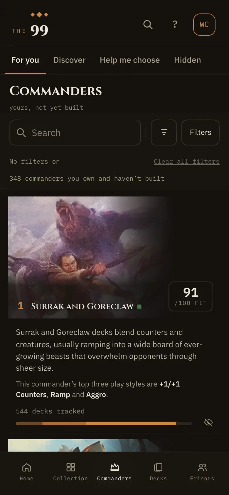
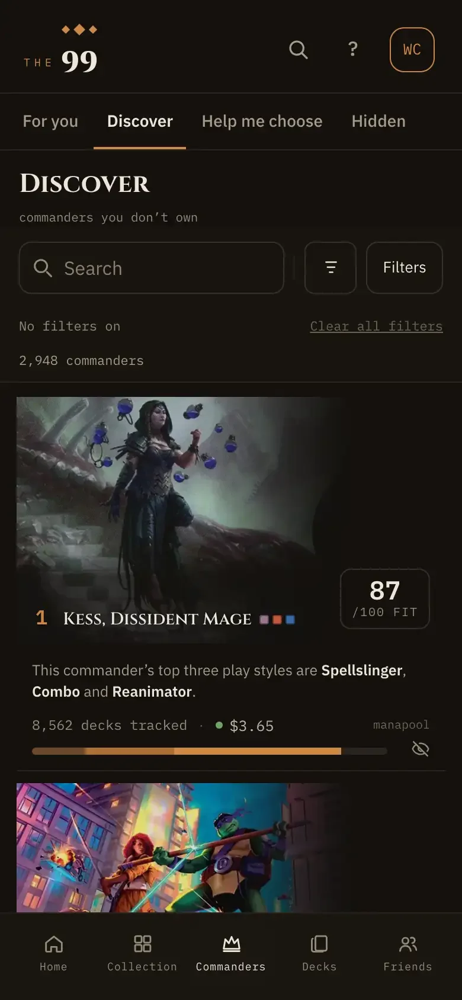
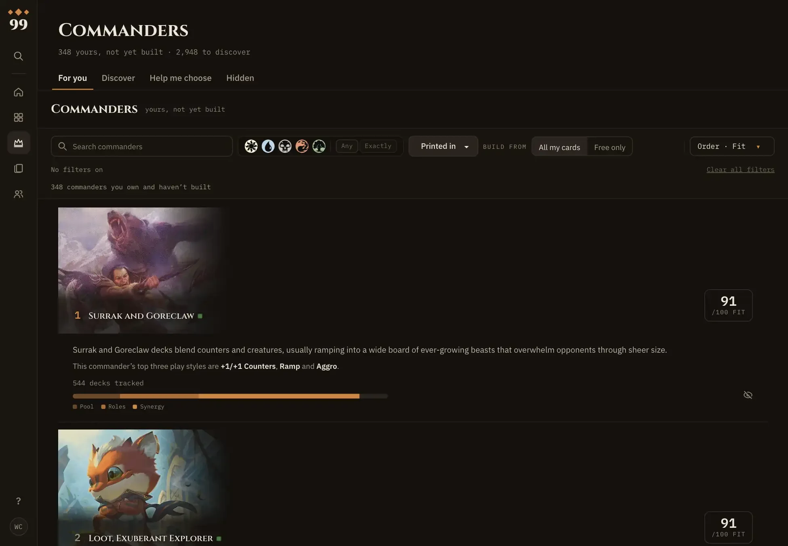
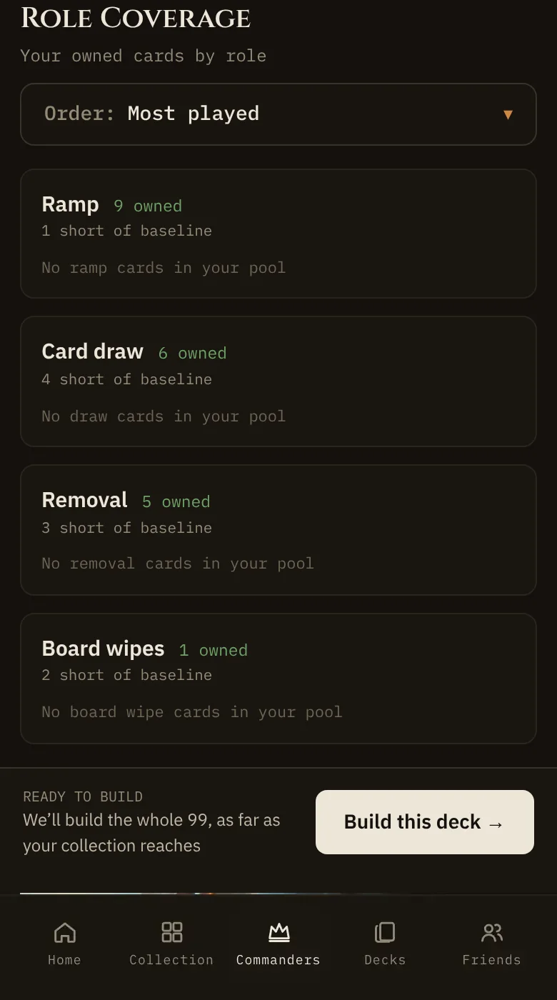
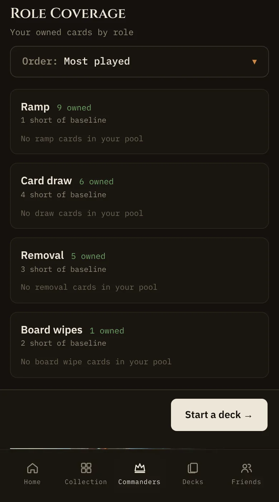
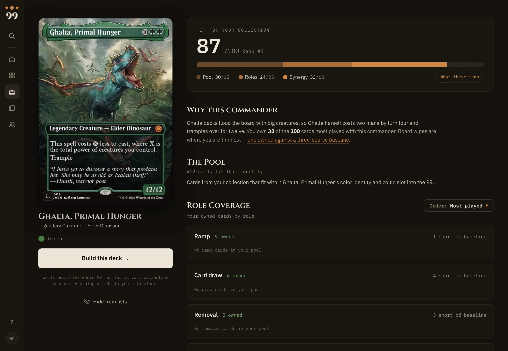
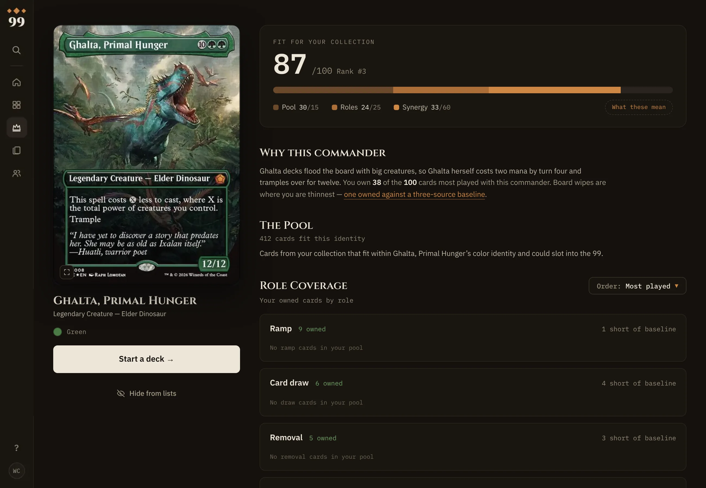

For you and Discover rows open the commander page, as shipped. On the page, the only change is the build promise: the page has one way to start a deck and makes no claim about how it will be built.
For you and Discover, shipped (rows open the commander page)

Select a row to open its commander page.

The same page, from Discover.

Desktop rows open the same page.
The phone bar at the end of the commander page: shipped, then proposed

READY TO BUILD and “We’ll build the whole 99…”, then Build this deck →.

The label and the promise go. One button: Start a deck →. With synergy picks, the shipped picks line sits to its left.

Build this deck → with the seed note under it.

Start a deck →, and the seed note goes. The Hide line moves up under the button.